This section provides an overview of the different kinds of diagrams supported by Capella. It is not an exhaustive list of all diagrams available in each Arcadia engineering phase.
Operational Architecture
Operational architecture diagrams are used in Operational Analysis. It captures the allocation of Operational Activities to Operational Entities. Operational Processes can be displayed as highlighted paths.
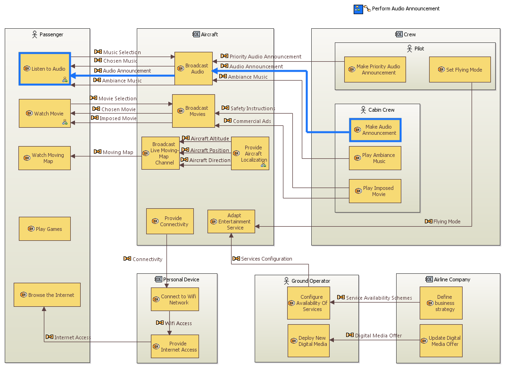{kind=link}
Capabilities
Capabilities diagrams are available in all Arcadia engineering phases but are particularly useful in Operational Analysis and System Need Analaysis. Capabilities are similar to UML use cases. They are illustrated by Dataflows, Functional Chains and Sequence Diagrams.
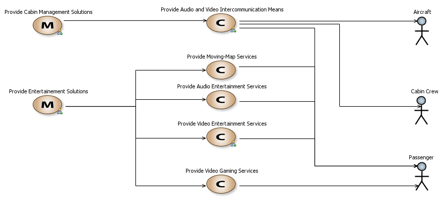{kind=link}
Dataflows
Dataflow diagrams are available in all Arcadia engineering levels. They represent information dependency between functions. These diagrams provide rich mechanisms to manage complexity: Computed simplified links between high-level Functions, categorization of Exchanges, etc. Functional Chains can be displayed as highlighted paths.
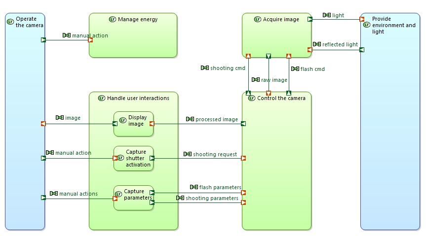{kind=link}
Architecture
Architecture diagrams are used in all Arcadia engineering phases. Their main goal is to show the allocation of Functions onto Components. Functional Chains can be displayed as highlighted paths. In System Need Analysis, these diagrams contain one box representing the System under study plus the Actors.
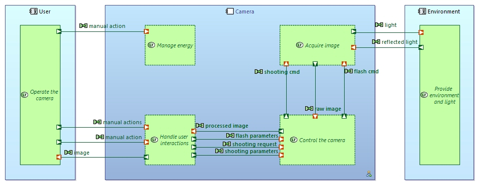{kind=link}
In Logical Architecture, these diagrams show the building blocks of the system. These are called Logical Components.
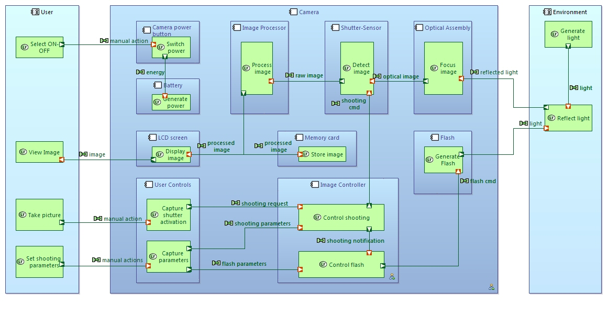{kind=link}
In Physical Architecture, these diagrams also show the allocation of Behavioural Components onto Implementation Components (typically material, but not necessarily).
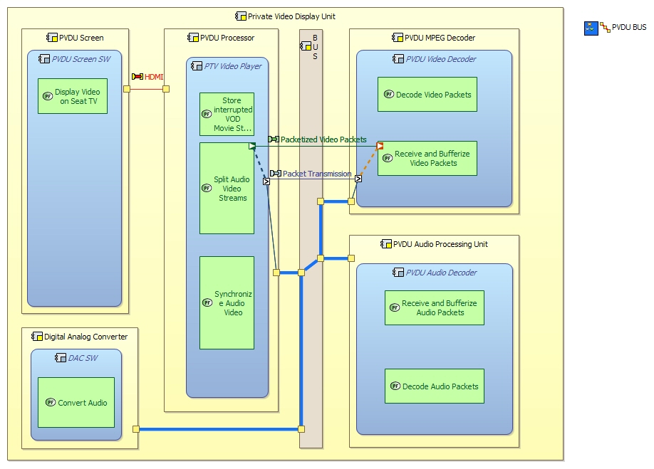{kind=link}
Trees
Tree diagrams represent breakdowns of either Functions or Components. Each node can be folded / unfolded.
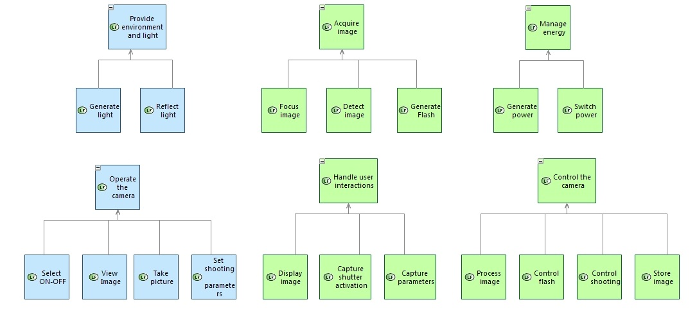{kind=link}
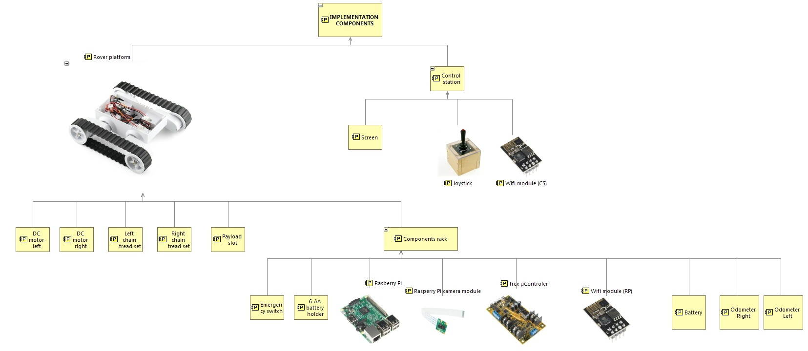
{kind=link}
Sequence Diagrams
Capella provides several kinds of sequence diagrams: Functional Scenarios (lifelines are Functions), Exchange Scenarios (lifelines are Components/Actors while sequence messages are Functional or Component Exchanges), Interface Scenarios (lifelines are Components/Actors while sequence messages are Interface Operations). Modes, States and Functions can also be displayed on these diagrams.
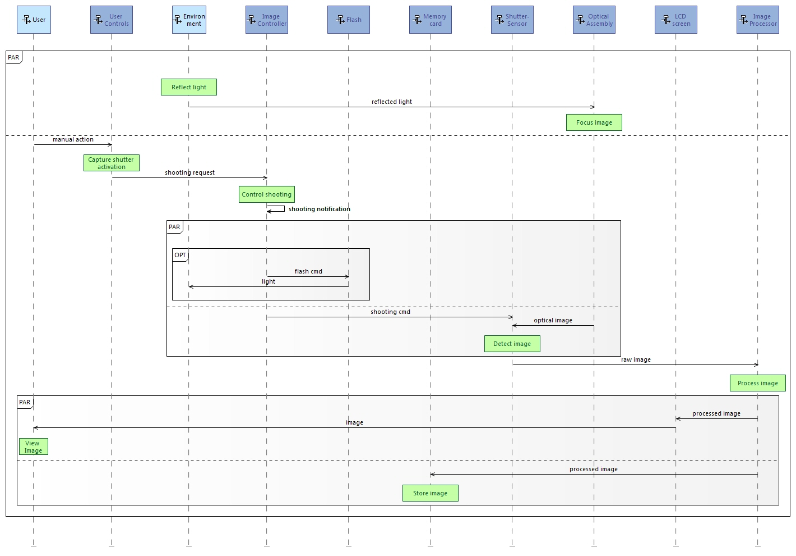{kind=link}
Modes and States
Modes and States diagrams are UML-inspired state machines. Modes / States / Transitions can be related to Functions, Functional Exchanges, Interface Operations, etc.
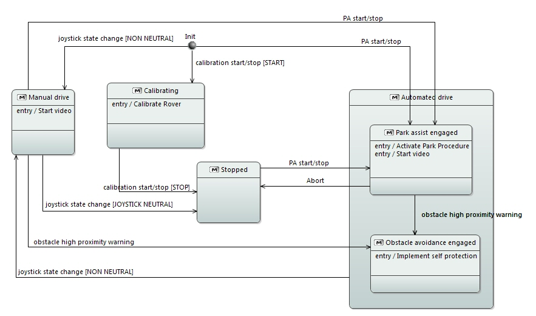{kind=link}
Classes and Interfaces
Capella provides advanced mechanisms to model bit-precise data structures and relate them to Functional Exchanges, Component or Function Ports, Interfaces, etc.

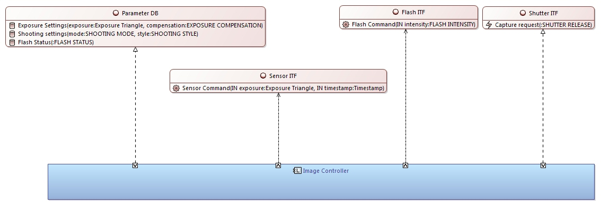
{kind=link}
The following is a non-exhaustive list of Capella differentiating features.
Methodological Guidance
The activity browser provides a methodological access to all key activities of Capella. It is the main entry point to a model and is both meant for beginners and power users.
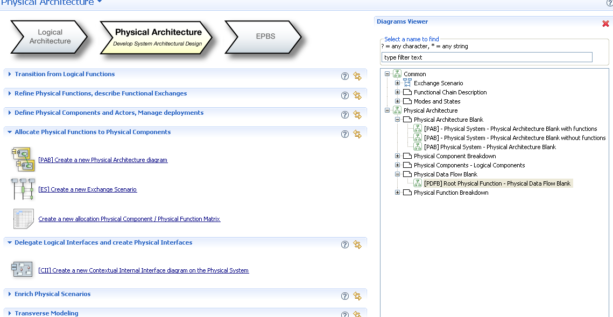{kind=link}
Semantic Colormap
As graphical representations of elements play a key role in communication, Capella relies on a consistent colour scheme. This favours enhanced model readability for all stakeholders (architects, V&V practitioners, specialty engineers, managers, etc.).
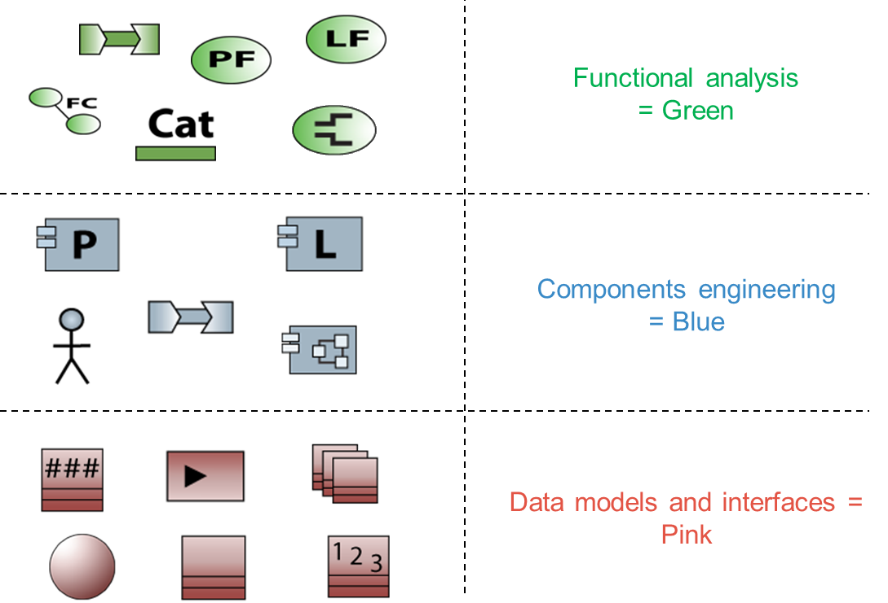{kind=link}
Semantic Browser
More useful than the standard hierarchical view of the model, the semantic browser instantaneously provides the context of model elements trough meaningful queries. It is the preferred way to navigate in models and diagrams and to quickly analyse the relationships between model elements.
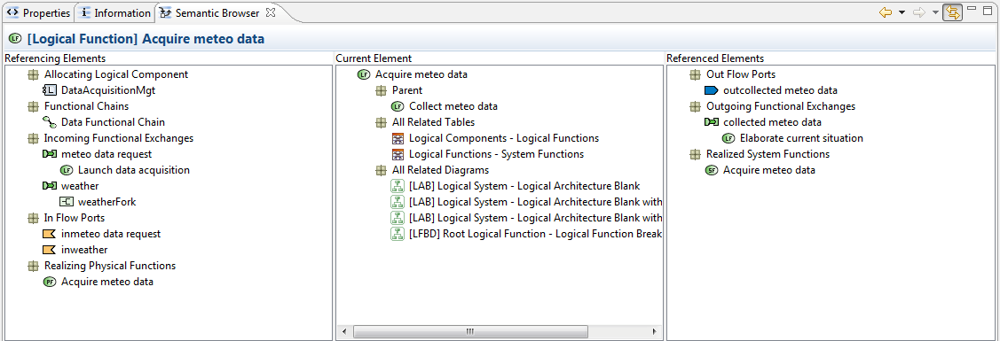{kind=link}
Computed Links
A key feature of Capella is its ability to scale and to tackle the increasing complexity of models. Capella automatically computes graphical simplifications. The information exchanges between lower-level functions are automatically displayed on higher-level functions. This relieves architects from managing intermediate information exchanges and manually maintaining consistency between several levels of abstraction. Capella also provides tag-based mechanisms allowing the graphical grouping of semantically close exchanges.
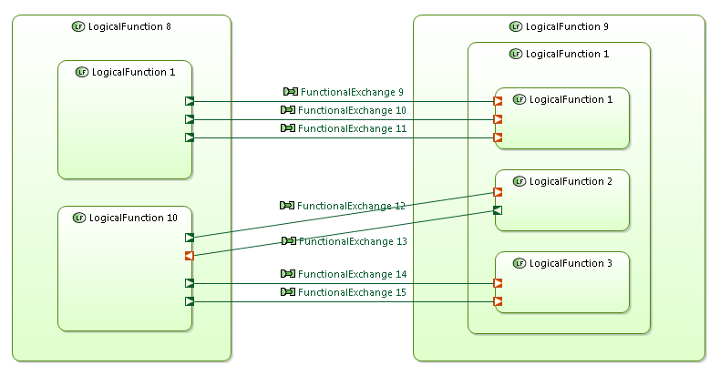{kind=link}
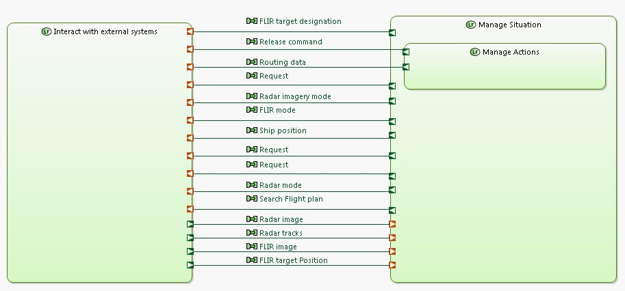
{kind=link}
Advanced Diagram Management
Automated contextual diagrams: Content is automatically
updated according to preselected elements and predefined semantic
rules
Synchronization/unsynchronization of
diagrams: Gives a fine level of control on the elements which
are systematically displayed or not (Ports of Functions,
Exchanges between Components, Properties of Classes, etc.)
Filters help improve readability of diagrams by selecting
display options and automatically hiding / showing elements.
Layers are means to customise the graphical rendering of
elements in a diagram based on different concerns (e.g.
speciality viewpoints).
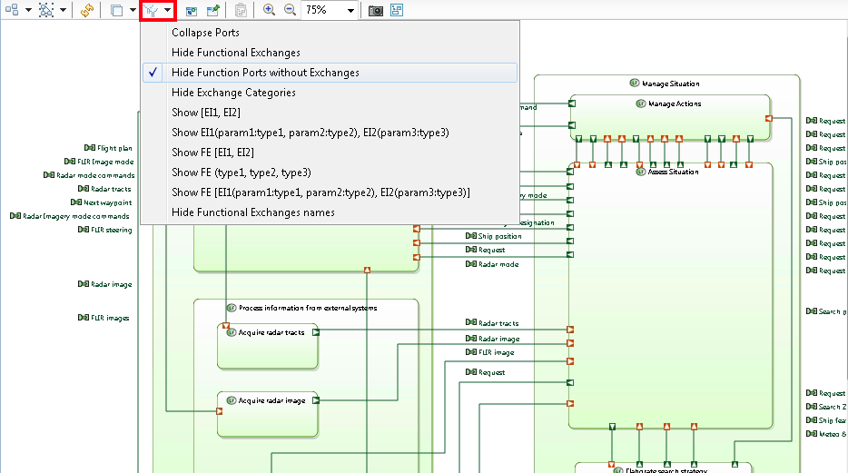
{kind=link}
Model Validation
Capella organizes model validation rules in several categories: Integrity, design, completeness, traceability, etc. Architects can define validation profiles focusing on different aspects. Whenever possible, quick fixes provide quick and automated solutions.
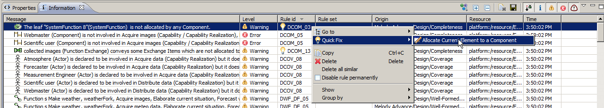{kind=link}
Semantic delete with preview
Capella provides instant impact analysis of deletions.
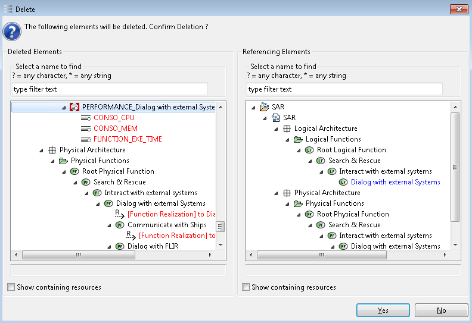{kind=link}
Replicable elements and libraries
Replicable Elements are mechanisms allowing the easy reuse of (possibly multi-root) model parts. A Replicable Elements Collection (REC, for Record) is a definition of an element / set of elements which can be reused in multiple contexts / configurations / models. A Replica (RPL, for Replay) is an instantiation of a REC. RECs can be packaged in libraries, which can be shared between several projects.
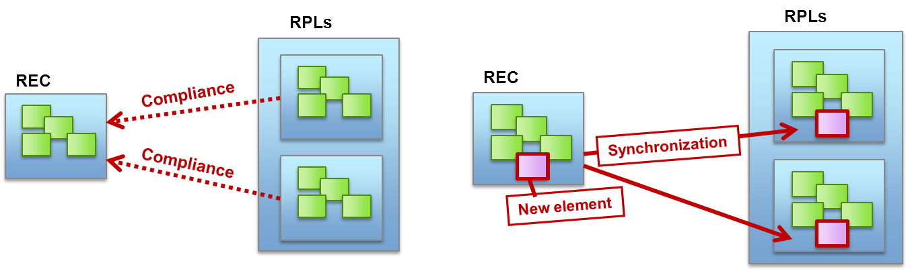{kind=link}
Modelling Patterns
Recurring modelling schemes can be captured with patterns.
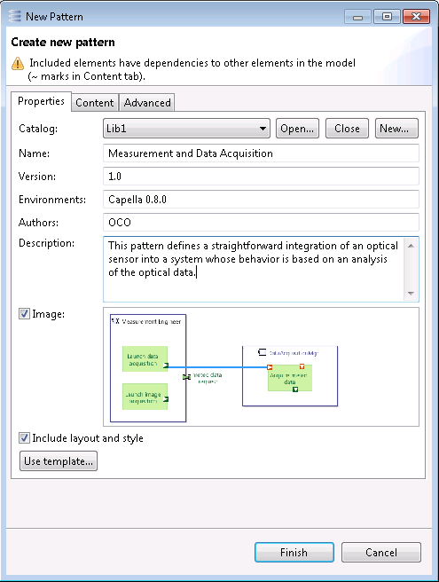{kind=link}
Transition System/Subsystems
The automated and iterative transition between system and subsystems is a great help for managing several levels of engineering. The contract and model of the subsystems are computed from the system. Ideally, subsystems stakeholders are involved in co-engineering activities at system level before the transition occurs.
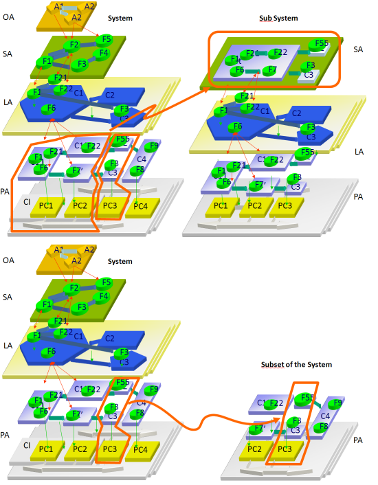{kind=link}
Multi-Viewpoint
Capella provides basic demonstration viewpoints (Mass, Cost and Latency). Combined with Kitalpha, it also provides an API for viewpoint development and a contributive comparison view to evaluate the performance of candidate architectures according to different concerns.
Note: The basic demonstration viewpoints and the framework are not packaged in the core distribution of Capella. They will be available as open-source add-ons by the end of 2015.
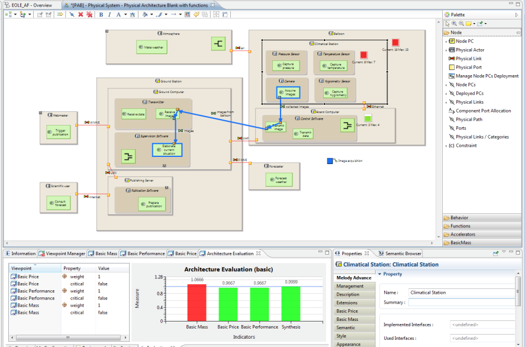{kind=link}
HTML output
Sharing models with all stakeholders is essential in model-based systems engineering. Publishing and sharing HTML versions of models helps make models THE reference of all engineering activities.
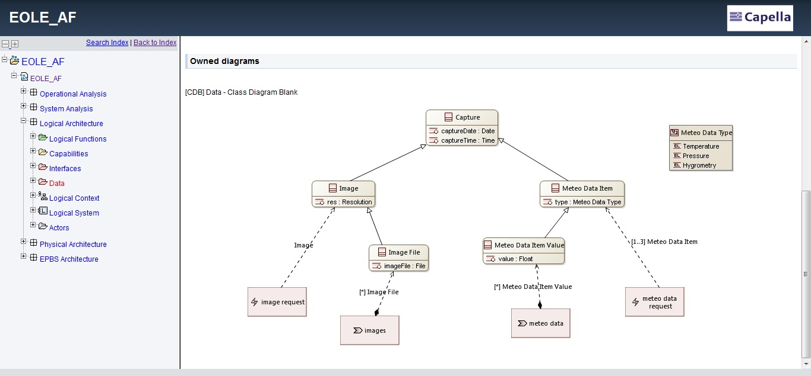{kind=link}
Creation of viewpoint with Capella Studio 1.1.0
Use of viewpoint with Capella 1.1.0
Embedded methodological guidance
Manage model complexity
Browsing the model
Productivity tools
Multi-viewpoint trade-off analysis